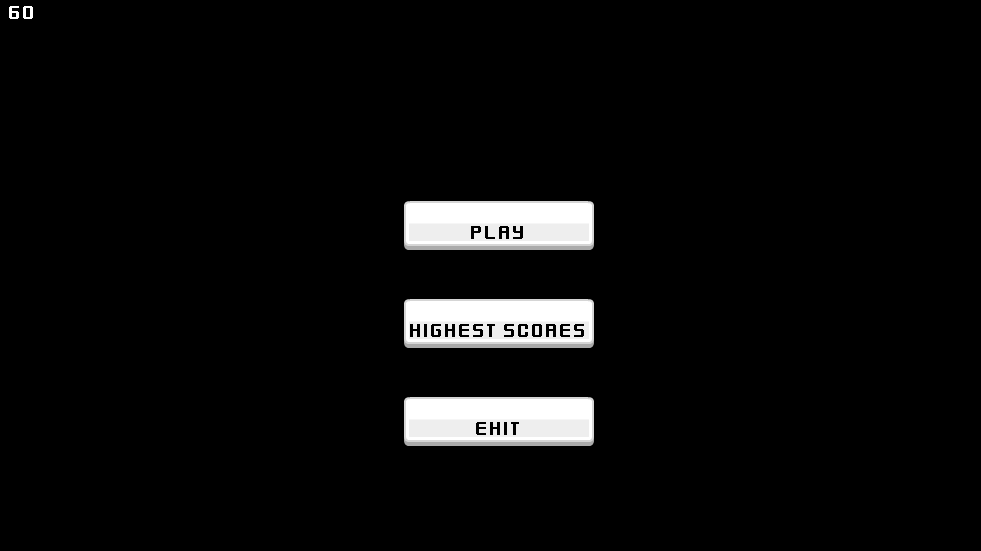
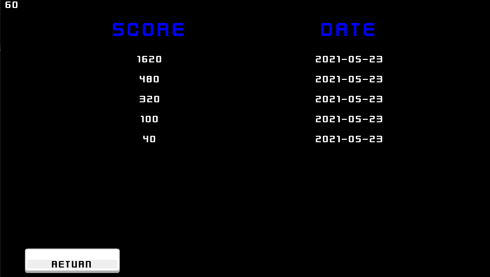
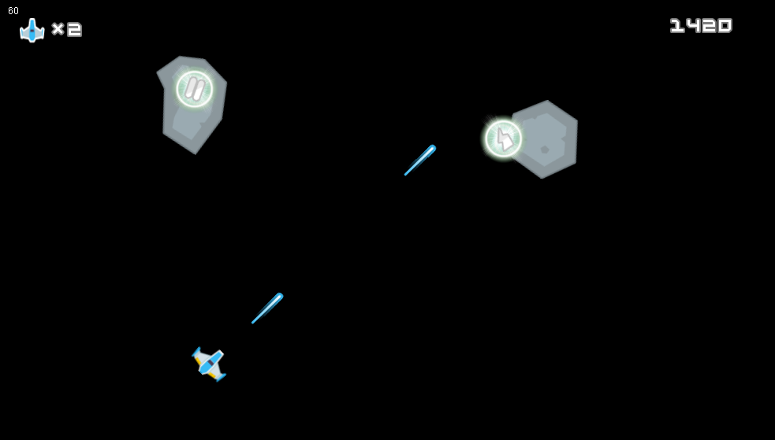
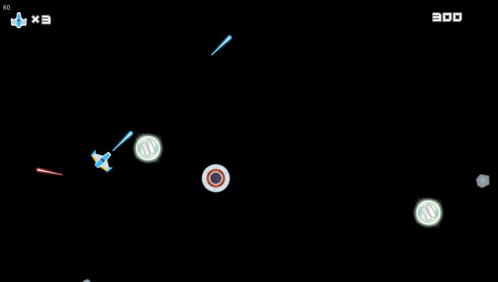

|
Trabajo realizado para Lenguaje de Marcas
Desarrolladores del videojuego
⬇⬇
👤Adrian Rodriguez Blanco
👤Fernando Peral Fernandez
Desarrollador de la pagina web
⬇⬇
👤Adrian Rodriguez Blanco
Indice
Introduccion
Requisitos
Sobre el videojuego
|
SPACE WAR
Space War ha sido un videojuego creado por Adrian Rodriguez Blanco y Fernando Peral Fernandez con el objetivo de desarrollar y crear en el todo lo aprendido en el curso (2020-2021) de Desarrollo de Aplicaciones Multiplataforma, en este libre proyecto cuya modalidad seria la decidida por la persona, pudiendo hacer asi aplicaciones web, herramientas de software, aplicaciones cientificas, videojuegos, etc... En este proyecto se ha decidido plasmar todo lo aprendido con un videojuego aplicando así todo lo dado en los modulos de este grado superior. Este grado superior consta de los siguientes modulos:
- Programacion
- Sistemas Informaticos
- Bases de Datos
- Lenguaje de Marcas
- Entornos de Desarrollo
A continuacion se esplicaran los contenidos necesarios de cada modulo
Requisitos específicos de Programación
Tras la entrega de la práctica, el profesor marcará unos días de defensa de la misma, destinados
a ir comprobando su correcto funcionamiento con el grupo desarrollador. Dicha defensa se
realizará únicamente con el código fuente entregado en su día al profesor, así como la
documentación pertinente, por lo que no podrán realizarse correcciones o mejoras después de
ese día. Durante la misma, los alumnos – desarrolladores habrán de responder a las preguntas
realizadas por el profesor, relativas al modo de implementación de la práctica.
Para poder superar la práctica, pues, será necesario:
- Entregar con puntualidad TODO el material.
- Que el programa funcione a partir del material (código fuente) entregados, sin errores
(forzados o no forzados), ni avisos significativos.
- Que los diagramas y demás materiales de diseño entregados sean coherentes con el
software desarrollado, y correcto a nivel semántico y de eficiencia.
- Responder justificadamente a las preguntas del profesor durante la defensa de la práctica.
Para construir la calificación final se tendrán en cuenta:
- Los elementos y conceptos estudiados durante el curso que han sido usados correctamente
en la práctica (herencia, polimorfismo, clases abstractas, interfaces, estructuras dinámicas de
datos, acceso a ficheros, elementos de la interfaz gráfica de usuario con Swing, acceso a
bases de datos, …).
- La eficiencia de la aplicación, así como su diseño, apariencia y originalidad.
- La facilidad de instalación de la aplicación y de la base de datos asociada (recomendable su
automatización y/o el uso de ficheros).
- La documentación entregada, que habrá de ser completa, útil y amigable para quien la
emplea (usuario final o desarrollador).
- El dominio de la programación en general, y de la práctica en particular, mostrado durante la
defensa.
Requisitos específicos de Bases de Datos
Para la “parte de base de datos” será necesario desarrollar lo realizado en clase
- Diseñar modelos relacionales interpretando diagramas entidad/relación.
Crear bases de datos definiendo su estructura y las características de sus elementos según el
modelo relacional.
- Realizar consultas sobre el contenido de varias tablas mediante composiciones internas.
- Consultar la información almacenada en una base de datos empleando asistentes,
herramientas gráficas y el lenguaje de manipulación de datos.
Llevando a cabo las siguientes tareas.
- Representar el modelo conceptual se usará el modelo Entidad/Relación. Plasmar el resultado
del análisis del problema mediante diagramas entidad-relación (Participación, Cardinalidad,
Atributos…)
- Transformar el modelo Entidad-Relación al modelo relacional.
- Implementar la base de datos utilizando lenguaje SQL (MySql), con las sentencias necesarias.
Para ello será necesario entregar el documento SQL, que contenga las Edición de Datos y las
consultas en SQL.
Para la calificación de la práctica será considerado:
- Identificar las tablas del diseño lógico. Identificar los campos que forman parte de las tablas
del diseño lógico.
- Analizar las relaciones entre las tablas del diseño lógico. Identificar los campos clave.
- Aplicar reglas de integridad.
- Crear las tablas y las relaciones entre ellas.
- Seleccionar los tipos de datos adecuados.
- Definir los campos clave en las tablas.
- Implementar las restricciones reflejadas en el diseño lógico.
- Desarrollar progresivamente actitudes profesionales como la importancia del trabajo en
equipo, la sistematicidad, el orden, la búsqueda de soluciones eficientes y el uso de un
lenguaje técnico cada vez más preciso.
Requisitos específicos de Lenguajes de Marcas y Sistemas de Gestión de Información
En lo referente al módulo de “Lenguajes de Marcas y Sistemas de Gestión de Información”, se
tendrá en cuenta lo siguiente:
- Se tendrá que realizar un sitio web donde todas las utilidades implementadas en el proyecto
tengan su reflejo en dicha página, de tal forma que el usuario pueda acceder desde Internet a
ellas. Este acceso podrá ser informativo, mediante la utilización de documentos creados para
el proyecto en su versión web. Dicha web también comprenderá el manual del usuario.
Incluirá los elementos típicos de cualquier sitio web: texto, imágenes, tablas, enlaces, etc… Se
utilizarán como herramientas HTML5, CSS y, si se considera oportuno, algún framework de
diseño adaptable.
- Si se considera oportuno, se realizará el almacenamiento de algún dato en XML, para lo cual
se realizará un diseño de la estructura elegida mediante XML y una herramienta a elegir
entre DTD o Esquemas XML XML Schema).
La entrega se hará en formato digital (PDF y fichero del editor de textos utilizado (LibreOffice,
Word, etc…). Esta entrega consistirá en el “Manual del diseñador web”. Contendrá, entre otros
elementos, los siguientes:
- Descripción breve del proyecto en general.
- Descripción del proyecto, pero usando sólo aquellos aspectos que se van a desarrollar en
la web. Se tendrá que justificar el por qué se han integrado unos aspectos y otros se han
desechado.
- Esquema explicativo del proceso, describiendo los ficheros que se van a usar: html, css,
xml, dtd, etc…
- Capturas de pantallas que hagan referencia a menús, procesos, documentos, etc…todos
estos, deberán ir acompañados de una breve explicación.
- Código fuente de todos los ficheros, indicando en una tabla a parte su denominación y
función. Todo el código fuente debe estar perfectamente documentado.
- Clarificación de todos aquellos aspectos que el alumno considere pertinente, al objeto de
una mayor claridad en los distintos puntos del proyecto.
Cada alumno entregará uno o dos documentos en formato Word.
En el caso de aquellos alumnos que realicen la práctica de Programación, entregarán dos
documentos, uno relativo al manual de usuario y otro relativo al manual del programador.
Aunque la práctica de programación se realice en grupo, cada alumno entregará una versión
diferente de la documentación. No se valorará el contenido, únicamente el diseño y la buena
praxis en el uso de la aplicación Word.
Los alumnos que no realicen la práctica de Programación deben solicitar al profesor de Sistemas
Informáticos permiso para la realización de otra documentación. Ésta será consensuada entre el
alumno y el profesor.
Características que deben cumplir los documentos entregados:
- Papel tamaño Din A4, y preparado para imprimir a doble cara.
Establecer al menos 1 cm para el margen de encuadernación.
- Habrá “encabezados y pies” distintos para páginas pares e impares.
- Si el documento lleva portada, el encabezado (y pie) de la primera página será diferente.
- En el encabezado se verá: Nombre de alumno, curso y título de la práctica.
- En el pie irá el número de página.
- No habrá párrafos vacíos (intros sueltos).
- Todos los párrafos pertenecerán a un estilo.
- Los estilos de título y/o subtítulo deben tener activada la propiedad “conservar con el
siguiente” y “espaciado anterior” mayor que “el espaciado posterior”.
- Habrá 3 ó 4 niveles de título que se diferenciarán por el tamaño de fuente. También se
puede cambiar tipo de fuente y de color.
- Se evitará el subrayado salvo para hiperenlaces.
- Todos lo que sea “código fuente” será con tipo de letra (fuente) monoespaciada. Por
ejemplo “Courier new”
- Habrá una tabla de contenido al principio o final del documento que incorporará un
índice generado automáticamente para todos los elementos (párrafos) que sean título o
subtítulo. Al hacer ctrl-clic en cada elemento del índice nos llevará a ese apartado.
- Las imágenes deben adaptarse al documento (estilo cuadrado ¿?)
- Si van dos imágenes a la misma altura, que vayan dentro de una tabla con bordes no
visibles.
- Si hay tablas largas (muchas filas), se aplicarán filas de encabezado.
- Se valorará la estética general del documento.
Requisitos específicos de Entornos de Programación
Se deberán entregar los diagramas UML generados en la fase de diseño de la aplicación (al
menos se requiere de uno o varios diagramas de casos de uso con aquellos más significativos o
indispensables para que la aplicación disponga de la funcionalidad mínima requerida).
En el caso de haber realizado, en la fase de codificación, pruebas unitarias y de cobertura de
código, se deberá añadir una tabla Excel en la que se muestre el resultado obtenido en dichas
pruebas.
Se debe consignar un documento con los planes de pruebas correspondientes, al menos, a los
casos de uso consignados en la fase de diseño como requisitos.
Si la aplicación requiere la entrada de datos desde un interfaz de usuario o desde un acceso a
base de datos, se deberá incluir la correspondiente tabla de clases de equivalencia y la tabla de
casos de prueba que se deriva de la tabla anterior considerando el análisis de valores límite si
fuera necesario.
También se deberá entregar el documento con el informe de pruebas correspondiente a la
ejecución de las pruebas indicadas en el plan de pruebas.
Para poder superar la práctica, pues, será necesario:
- Entregar con puntualidad TODO el material.
- Que los diagramas UML entregados sean coherentes con el diseño de la aplicación.
- Que los documentos sean coherentes y pertinentes con la aplicación generada.
- Responder justificadamente a las preguntas del profesor durante la defensa de la
práctica.
Para construir la calificación final se tendrán en cuenta:
- Los elementos y conceptos estudiados durante el curso que han sido usados
correctamente en la práctica.
- La documentación entregada, que habrá de ser clara, completa y útil para quien la
emplea (desarrollador y equipo de pruebas).
- El dominio de las herramientas y entornos de desarrollo utilizados, en particular,
mostrado durante la defensa oral de la aplicación.
Sobre el videojuego
El videojuego creado el 4 de junio de 2021 trata sobre una nave espacial que debe de esquivar o derribar por ende los meteoritos o los enemigos que se le plantea.
Space War consta de varios niveles con varias habilidades, diferentes enemigos tamaños de meteoritos (todo ello se especificará en el xml), el juego ha sido creado inspirandose en el mitico juego Space Invaders, siendo este un muy conocido juego arcade diseñado por Toshihiro Nishikado y lanzado al mercado en 1978.
En un principio fue fabricado y vendido por Taito Co. en Japón, para posteriormente ser licenciado para producción y distribución en Estados Unidos por Midway Games, división de Bally Technologies. Space Invaders es uno de los primeros juegos matamarcianos. Es uno de los videojuegos más importantes de la historia. Su objetivo es eliminar oleadas de alienígenas con un cañón láser y obtener la mayor cantidad de puntos posible. Para el diseño del juego, Nishikado se inspiró en Breakout, La guerra de los mundos y Star Wars.
Aunque es un juego simple para los estándares actuales, fue uno de los precursores de los videojuegos modernos y ayudó a expandir la industria del sector, desde una mera novedad a una industria global. Fue exitoso y popular desde su lanzamiento, tanto que existe una leyenda urbana que habla de una breve escasez de monedas de cien yenes en Japón. Al año 2007, Taito ha ganado US$500 millones en utilidades.
El éxito de este videojuego es legendario, en Japón empezó a haber gran escasez de monedas, dado que eran utilizadas en las salas de videojuegos. El gobierno tuvo que aumentar el número de monedas para hacer frente a la emergencia.
Imagenes de Space War
Imagen del Menu

Imagen de puntuaciones

Imagenes del juego


Codigo del videojuego
(En desarrollo)
Pagina Web de registro: Donaciones y Ayuda Correo: Adrian.rodbla@educa.cyl.es Instagram: _adrianrb_
|